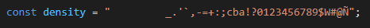
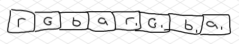

First of all, we need a way to access the users camera. Personally, I don't have much experience with cameras, so I used something from StackOverflow.
We define a string which will be used as the graident for later:

The individual characters within this string are what we will be printing in place of colors/pixels from each frame later on.
We want to grab pixel data from each frame of our video, so we do just that. We call getImageData(), which provides an array of rgba values.
The array of 'rgba' data we are given looks something like this: 
Notice how each 'r' value is stored '4' indeces apart? Similarly for each other value.
To put it simply, to access each red value we multiply the desired index by 4. EX: 0*4 = 0 for the first 'r' index, and 1*4 = 4 for the second 'r' index.
To access the 'g' and 'b' values (we don't care about 'a'), we simply add on to our previous math: +1 for 'g' and +2 for 'b'.
Now we have an 'r' 'g' and 'b' value for a pixel from the current frame. We need to turn it into a character from the density string.
One way to do this is to take the average of the r g b values and map the number to some index of the density string.
So we do that with some math, and print the corrisponding character to a string called row. We itterate through the entire frame, grabbing 'rgb' values and mapping them to a character from the density string, until it's time to disply the frame of ASCII.
We use element.textContent to display the string of ASCII that we have compiled.